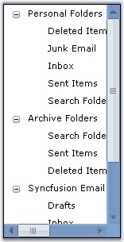
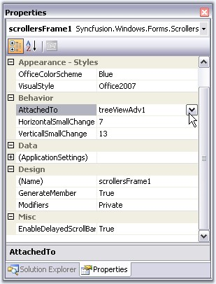

The ScrollersFrame control attaches Office2007 Style scrollbars to any scrollable control or container.

Figure 1411: Office2007Style ScrollBars Attached to TreeViewControl
Attaching Scrollbar to a Control
To the Windows form, add a control, which should be attached with the Office2007Style scrollbars. Select the control in the ScrollersFrame.AttachedTo property.

Figure 1412: Selecting the TreeViewAdv control through AttachedTo Property
|
[C#]
//Attaching Scrolls using AttachedTo property this.scrollersFrame1.AttachedTo = this.treeViewAdv1; |
|
[VB.NET]
'Attaching Scrolls using AttachedTo property Me.scrollersFrame1.AttachedTo = Me.treeViewAdv1 |
 Note: This property lists all the controls
that are added to the form. User can the select any one control, for which
scrolls needs to be attached.
Note: This property lists all the controls
that are added to the form. User can the select any one control, for which
scrolls needs to be attached.
See Also
Adding Controls to the ScrollBar, Scroll Settings, Visual Styles
 Adding Controls to the ScrollBar
Adding Controls to the ScrollBar